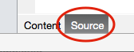
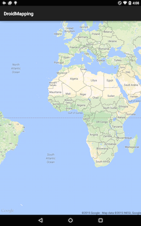
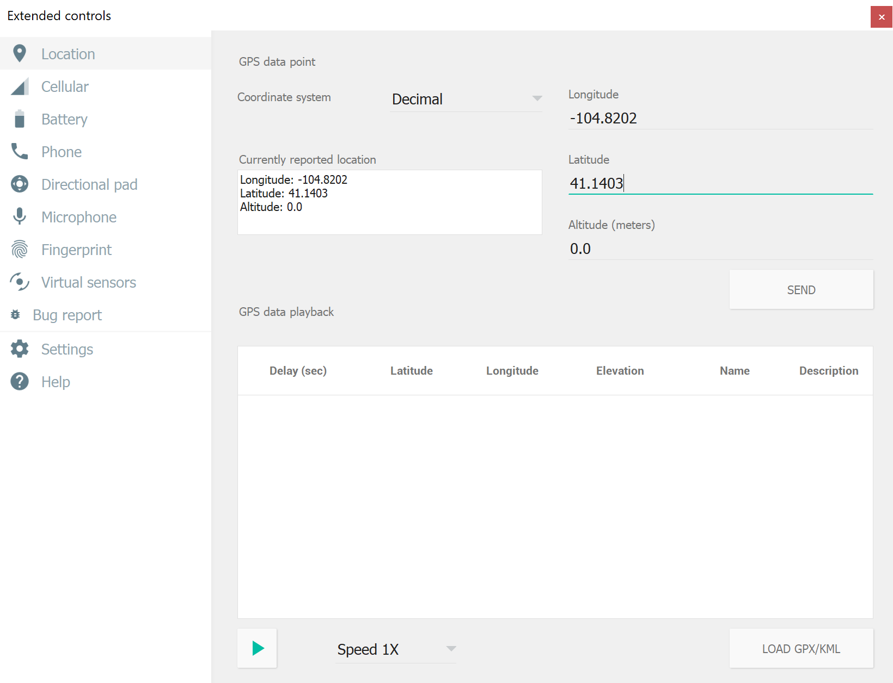

Duration
10 minutes
Lab goals
In this exercise, you will add the map visualization to your Android application and display the interactive map in a fragment.

Required Assets
There is a Exercise 3 folder included with this lab exercise which contains a completed project if you'd like to compare your work or deviate from these exercise instructions to experiment.
Exercise Challenge
To complete this exercise, you will need to do the following high-level steps. Use these to guide you through the code changes and ask questions of the instructor or refer to the slides just covered in class. If you are doing the exercise on your own, then you can refer to the step-by-step directions below to fill in any necessary details.
-
You will add in a
MapFragmentinto the Main.axml layout file and get access to it in theOnCreatemethod in MainActivity.cs and run the program to see the initial map display. -
Next, you will obtain the
GoogleMapinstance through theGetMapAsyncmethod and use it to turn various mapping settings on and off, including:- Change the
MapTypeto try various styles. - Turning on the current location.
- Enabling various interactive user controls through
UiSettings. - Disable the built-in gestures to create a static map.
- Change the
You can either continue on from the prior exercise, or use the completed solution from Exercise 2. Make sure to setup the API key in the GoogleMapsKey.cs file if you use the prior solution.
Steps
Add a Basic Map
In this exercise, we will use the Google Play Maps library to visualize a simple Google Map in our application.
-
First we need to add the
MapFragmentto the UI. Open the Main.axml file in the Resources/Layout folder in the project. This will open the designer view, but unfortunately, the designer does not support adding fragments to the UI so we will need to hand-edit the XML. - Switch to the source view by clicking the tab at the bottom of the designer window. It should look something like: 
-
Add a
fragmenttag into the existingLinearLayout. It should have the following attributes set:
| Attribute | Value |
|---|---|
| android:id | @+id/map |
| android:layout_width | match_parent |
| android:layout_height | match_parent |
| class | com.google.android.gms.maps.MapFragment |
The last attribute: class is the important one that designates this as a Map UI. We are currently setting this up to be a full-screen map, but this fragment could be placed into any screen or space desired by adjusting the layout properties appropriately.
In addition, even though you did this in XML, you could also add the fragment in code for a completely dynamic insertion.
That is all that is required to display the map, but let's and use the FragmentManager to get access to this fragment element in the OnCreate method.
-
Open the MainActivity.cs file and add a new
MapFragmentfield to the class. Name it mapFragment. -
Next, locate the
OnCreateoverride and assign the new field to the fragment using theFragmentManager.FindFragmentByIdmethod. You will want to use the assigned resource id you applied to the XML. - Run the application on a device or emulator configured with the Google apps. It should display an interactive map (you can pinch-to-zoom, pan and rotate the map around). Here's a list of supported gestures. 
Java.Lang.NoSuchFieldError error, your Google Maps package may not have been compiled into your project correctly. This can be fixed by doing a Clean on your Android project.
Get the GoogleMap instance
In this part you will get the GoogleMap instance from the created fragment.
-
In the
OnCreateoverride, after you've obtained theMapFragment, call theGetMapAsyncmethod. This takes a reference to aIOnMapReadyCallbackinstance. Go ahead and passthis(the current instance). -
Next, to satisfy the requirement, implement the
IOnMapReadyCallbackinterface on yourActivity. It has a single methodOnMapReady. -
In the
OnMapReadymethod, store the passedGoogleMapobject in a field in the class named map. - Build the application just to make sure it doesn't have any compile errors.
MainActivity : Activity, IOnMapReadyCallback) and then right click on the interface name (which might be underlined in red). You can then select Fix > Implement Interface in Visual Studio for Mac, or Implement Interface in the context menu on Visual Studio for Windows.
Customize the map
In this final part you will change some of the settings of the GoogleMap to control the visualization. You will do all the settings changes in the OnMapReady implementation after you have gotten the map instance.
-
First, change the
MapTypebeing displayed. The property is an integer type which can be one of the following constant values:- GoogleMap.MapTypeNone
- GoogleMap.MapTypeNormal (default)
- GoogleMap.MapTypeSatellite
- GoogleMap.MapTypeHybrid
- Change to the satellite view and run the application to see the results. Try the Hybrid type as well.
-
Next, turn on the current location marker using the
MyLocationEnabledproperty. Being able to set this property to true is completely dependent on the user granting us location permissions. If we ran it with just that line, we would have a runtime exception any time the user hasn't clicked "allow" prior to that line of code being executed. -
To avoid this race, switch
OnMapReadyto async so we can await the permissions request result, settingMyLocationEnabledaccording to the user's response. - Run the application to see the results. You will likely have to scroll the map around and zoom in to find the marker.
- If you are using the Google Android emulators to test your application, you can change the current location through the Extended controls panel (click the ellipsis icon "..." in the emulator toolbar) and going to the Location section. 
-
Try turning on the UI adornments using the
UiSettingsproperty.- CompassEnabled
- MyLocationButtonEnabled
- ZoomControlsEnabled
-
Finally, try simulating a read-only map by turning off the gestures through the properties on
UiSettingsor through theUiSettings.SetAllGesturesEnabledmethod and run the app to see how it affects the map interaction.
I'm not seeing my location on the emulator
I'm not seeing my location [the first time I run the app]
Summary
Congratulations! In this lab exercise, you added a simple map to the UI and changed some of the basic configuration elements to customize it to your display.